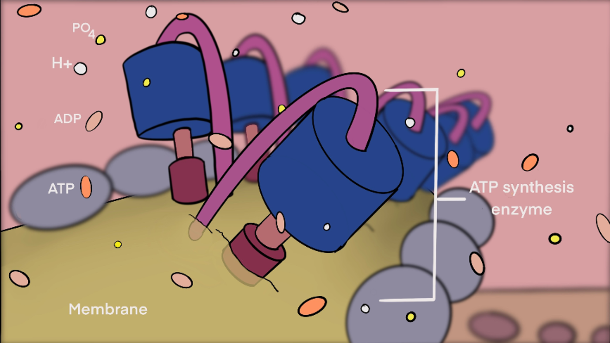
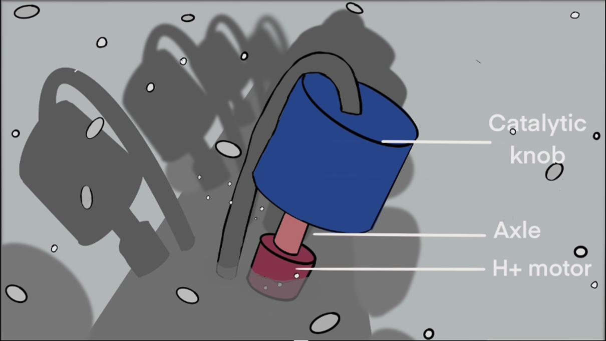
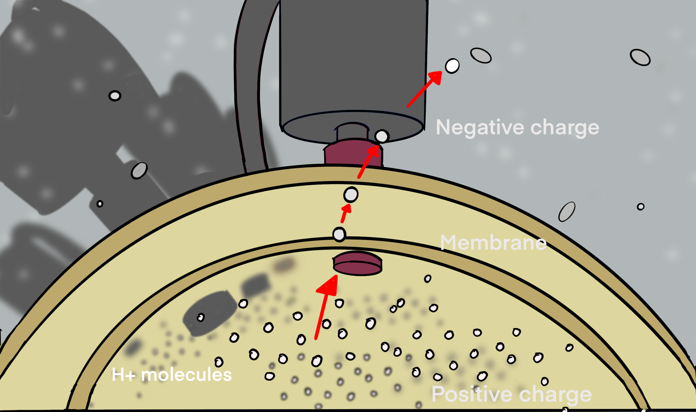
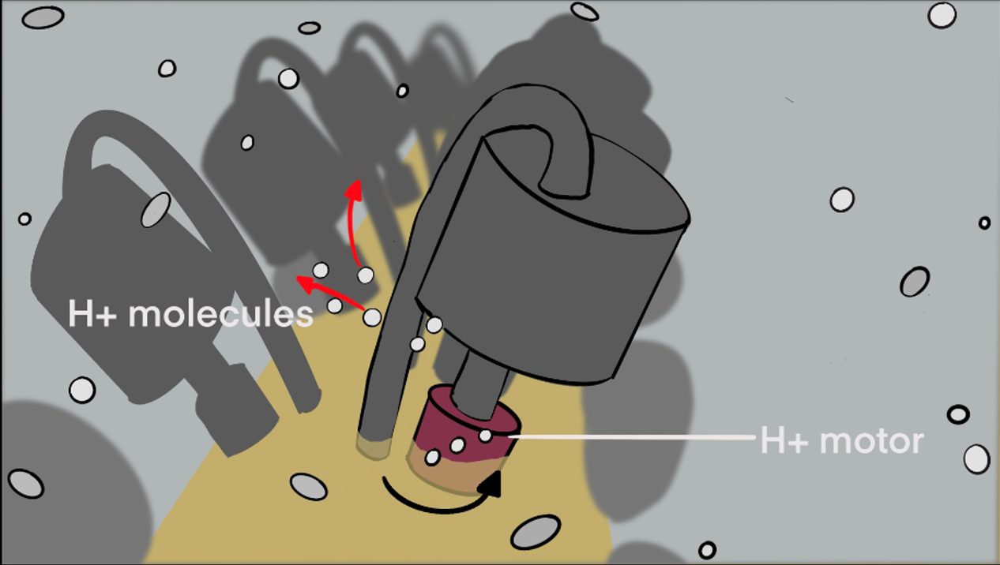
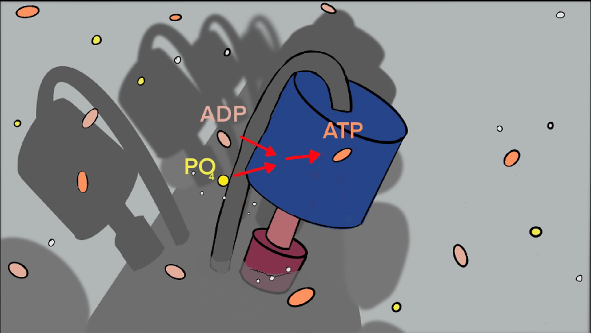
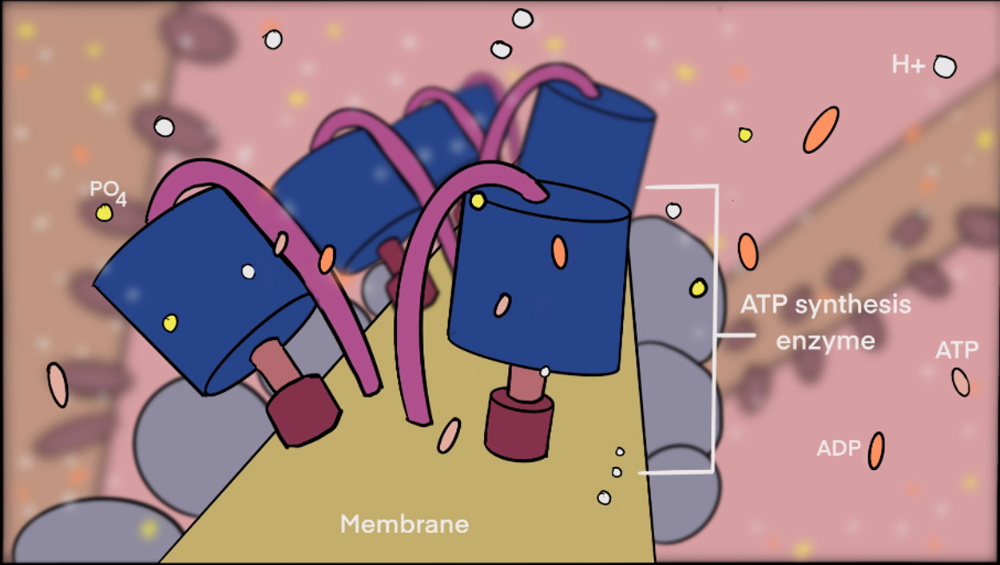

Please carefully look at the representation and study the following biological process.
You will be asked questions about the mechanism of ATP synthesis on the previous page.
Once you finish reading this section, please go abck to the other studies in the other tab,
but do not press the return button in your browser.
ATP Synthesis
1. Inner membrane of the mitochondria.

2. ATP synthesis enzyme parts.

3. H+ molecules crossing the membrane from high concentration to low concentraion area through the ATP synthesis enzyme.
The H+ molecules rotate the H+ motor.
Cross-section of the membrane

Outside view of the ATP synthesis enzyme

4. The rotating H+ motor activates the catalytic knob of the ATP synthesis enzyme which acts as a catalyst in joining
the PO4 and the ADP molecules to form ATP.
ATP synthesis PO4 + ADP → ATP

5. The creation of ATP from PO4 and the ADP molecules in the mitochondrial interior through the ATP synthesis enzyme.

Please press the return to the previous page by clicking on the tab in the browser. Do not clcik the 'Reload this page'
button or the 'Click to go back button'. After you get to the evrsions page, please continue to look at the othe representations.